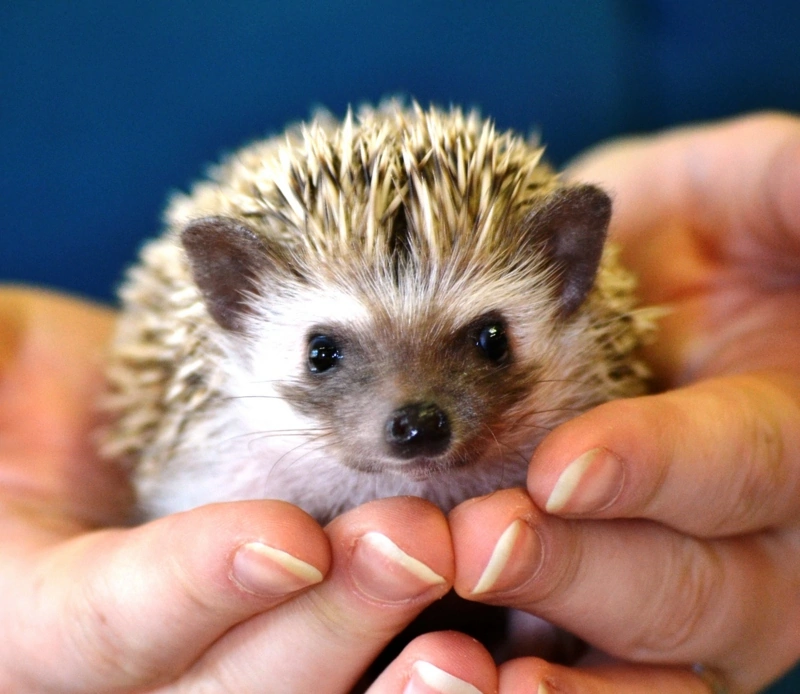
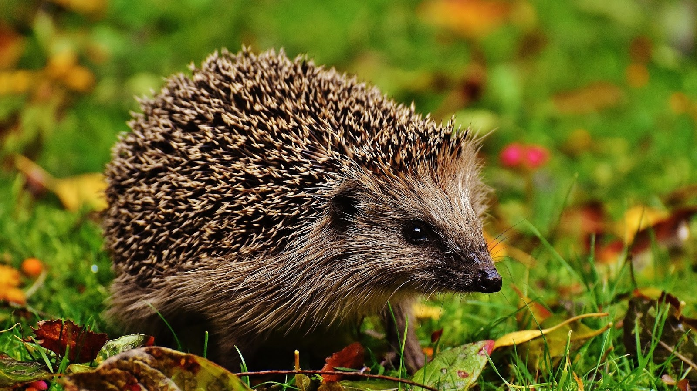
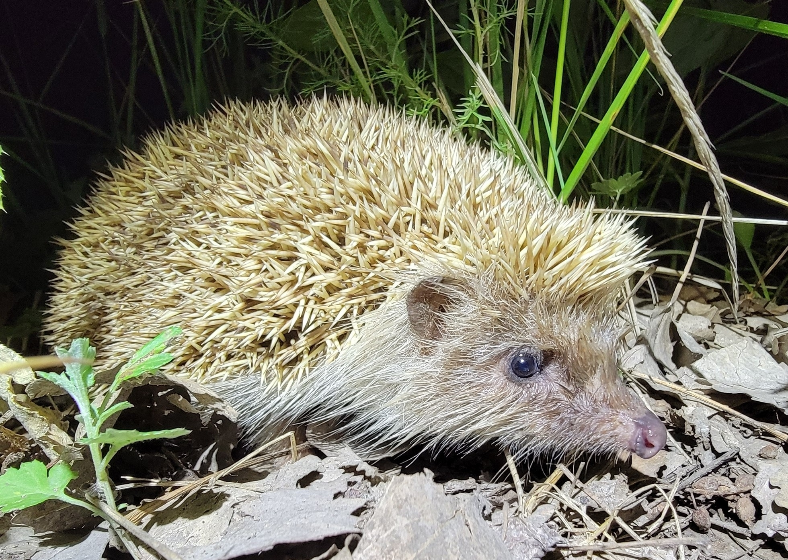
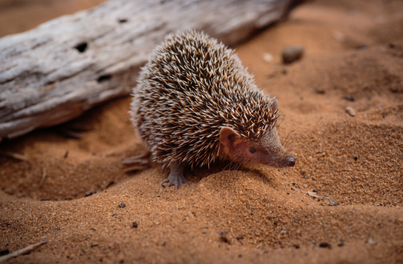

¿En donde se originó el erizo?
Los erizos (Erinaceinae) son pequeños mamiferos cubiertos de púas pertenecientes al orden Eulipotyphla.
Existen un total de 16 especies de erizos divididas en 5 generos.
En donde se encuentran.
Estos pequeños mamiferos habitan Europa, Asia, Africa y fueron intruducidos por el hombre en Nueva Zelanda.
¿Todos los erizos surgieron de forma natural?
El unico erizo que fue creado por el hombre es el erizo pigmeo africano que es una cruza entre el morruno y el africano.
Especies de erizos de tierra
Genero Atelerix
- Erizo pigmeo.
- Erizo moruno.
- Erizo sudafricano.
- Erizo somali.
Genero Erinaceus
- Erizo de Manchuria.
- Erizo oscuro oriental.
- Erizo europeo.
- Erizo de los balcanes.
Genero Hemiechinus.

- Erizo orejudo o egipcio.
- Erizo orejudo de la India.
Genero Mesechinus.
- Erizo de Gobi.
- Erizo de Hugh.
Erizo Paraechinus.
- Erizo del desierto.
- Erizo de Brandt.
- Erizo de la India.
- Erizo de vientre desnudo.
Para saber más de cada genero ir hasta la seccion de caracteristicas.
Evolucion de la especie a lo largo del tiempo
Los erizos no sufrieron cambios aparentes en los ultimos 15 millones de años.